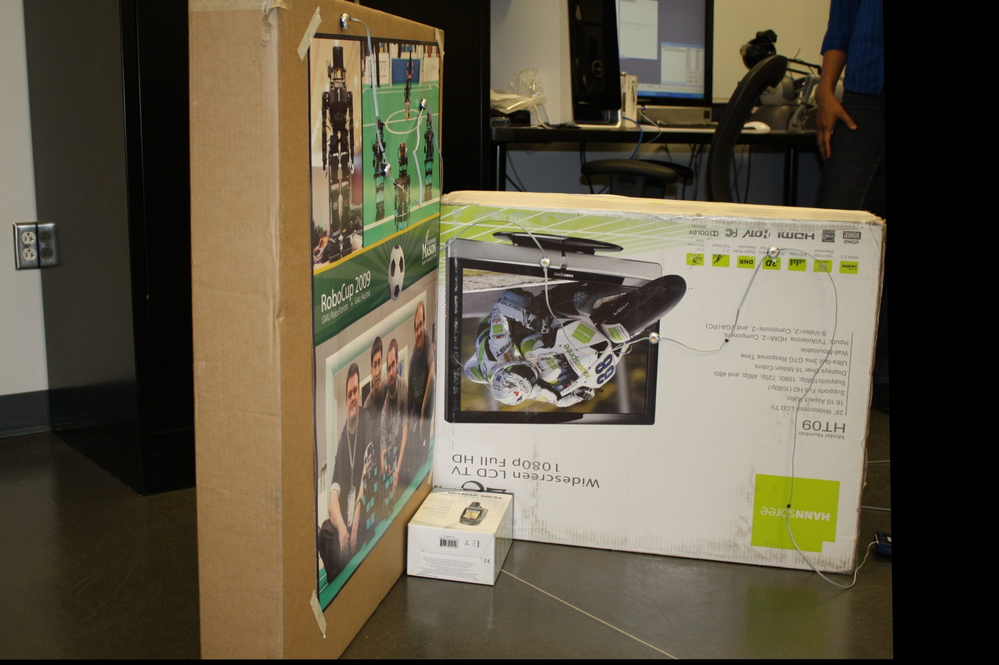

Image pairs #1:
Image pair #2:
Find and match features in pairs of images (5p): You should select a feature detector that finds a lot of features, such as SIFT, SURF or Harris. Choose a descriptor and demonstrate matching between an image pair.
I used the sift feature detector for feature detection. Then I used the FlannBased matcher. I only looked for at least 11 features then I stopped looking for more key features. Threshholding with ratio between the different features. This was very similar to hwk3.
Compute a transformation between an image pair (10p): OpenCV provides function for computing an affine 2D transform or a homography between image pairs. Please note that you can choose to use RANSAC option with your transformation computation method. You should provide both affine transform and the homography computed using different options for at least one image pair
I defined two functions one that calculates the Homography matrix using cv2.findHomography. The function takes in the point pairs of the key features.I used Ransac method with a threshold of 5. Then it saves a 3x3 Matrix saved to a file.Then there is another function defined that calculates the Matrix for Affine Transformation which produced a 2x3 matrix.
Use the computed homography to warp the second image into the first and blend them appropriately. Display the aligned images in a single frame. Note that this image will be bigger than the original images.
The last function brings all of this together. So first it calculates the feature matches and then uses them to calculate the Homography Matrix. It then uses the matrix to warp the image using the Matrix.This is done with the warpPrespective function that takes a two images and the homography matrix